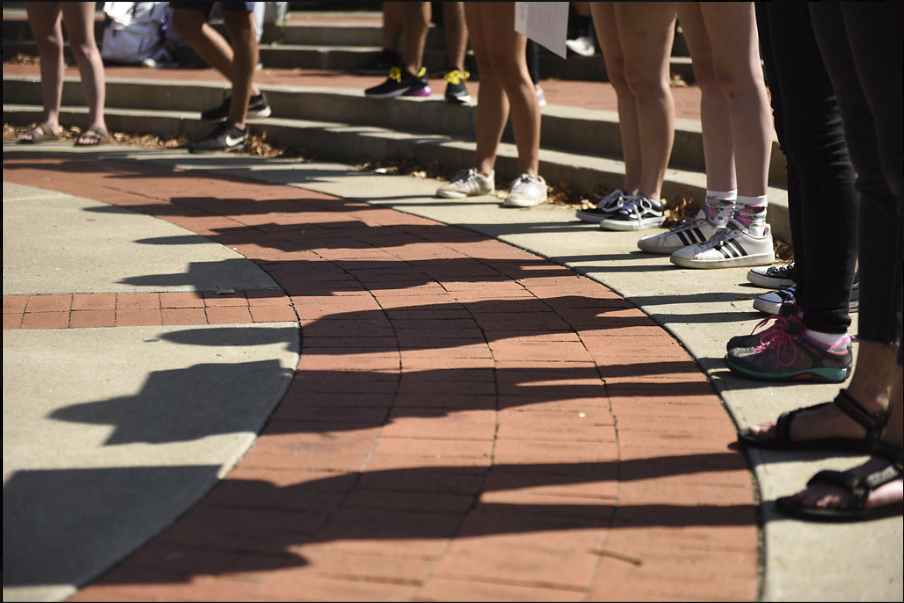
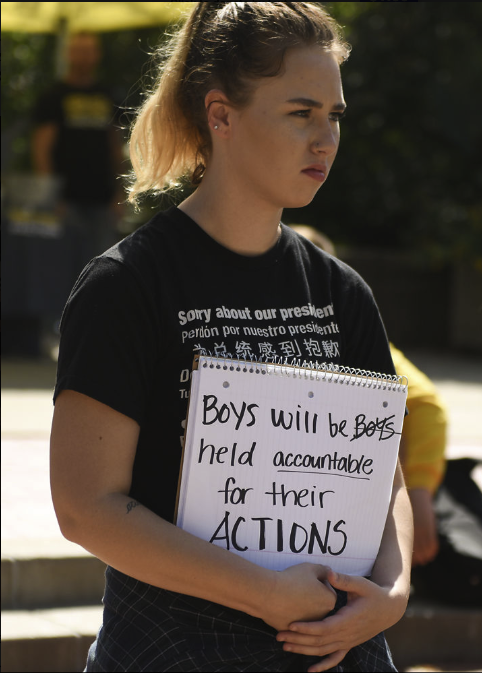

Filling the Gap
Hear her story
A protest addressing gender-based violence, rape culture and inequality towards women was held Wednesday at Speakers Circle. Participants and survivors encouraged all women to stand up and speak out against violence.

Women gather to protest in Speakers Circle.

Jessica Johns, a survivor and participant of the protest, shared her own story.

Participants hold signs to stand up against sexual violence.
Lillian Kraxberger speaks to the crowd. The protest was meant to encourage women to stand up for their rights and gender-based violence.